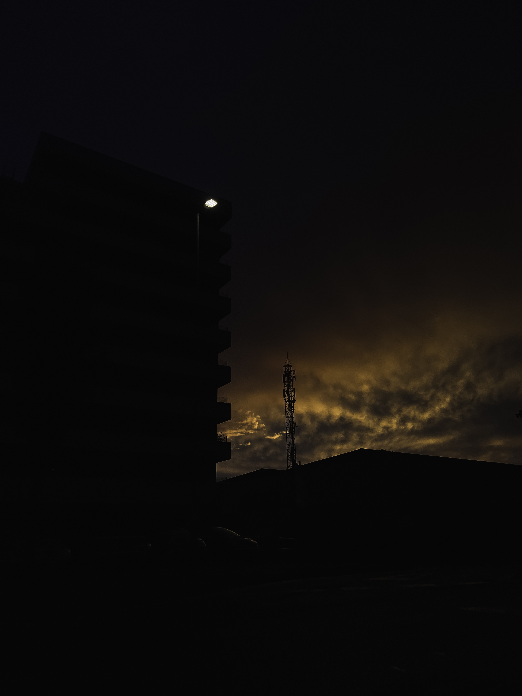

Pamplona, Navarra
¿Cuál es la cámara de fotos ideal para la fotografía de paisaje?
A diferencia de otros géneros fotográficos como el deporte o la fotografía de animales, para los cuales se agradece disponer de una cámara con prestaciones avanzadas, las fotos de paisaje no son muy exigentes en ese sentido.
Cualquier cámara de fotos (eso sí, con controles manuales) te permitirá obtener muy buenos resultados. A nivel de equipo fotográfico, la cámara es donde menos problemas vas a tener. El objetivo que le acoples a esa cámara sí que puede tener miga. Vamos a verlo.
Pero antes, te dejo un listado de mis recomendaciones de las mejores cámaras réflex para iniciarse en fotografía.